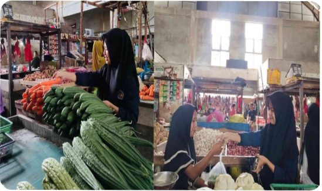

Membangun Ekonomi Bangsa : Aksi Nyata Mahasiwa dalam Mewujudkan Kesejahteraan Masyarakat
Di tengah gejolak ekonomi yang semakin meningkat, bayang-bayang kemiskinan, kesenjangan ekonomi, dan pengangguran menjadi tantangan bagi pemerintah. Di saat seperti ini, peran pemuda, khususnya mahasiswa, sebagai agen perubahan dan motor penggerak kemajuan bangsa, menjadi sorotan utama.
Mahasiswa, dengan semangat dan idealismenya yang tinggi, memiliki potensi besar untuk menjadi solusi atas permasalahan ekonomi bangsa. Mereka adalah agen edukasi, inovator, dan aktivis yang mampu mengantarkan bangsa menuju gerbang kemakmuran. Sebagai generasi penerus bangsa, mahasiswa memiliki tanggung jawab untuk berkontribusi dalam mengatasi permasalahan ekonomi. Artikel ini akan membahas peran salah satu mahasiswa Universitas Tanjungpura Pontianak yang bernama Supiyah dalam upayanya membantu pemerintah mengatasi kemiskinan, kesenjangan ekonomi, dan pengangguran.
Supiyah sebagai salah satu mahasiswa Universitas Tanjungpura Pontianak Program Studi Ilmu Pemerintahan Fakultas Ilmu Sosial dan Ilmu Politik Angkatan Tahun 2023. Adapun tujuan saya membuat artikel ini yaitu untuk memenuhi Tugas Ujian tengah Semester dari mata kuliah Sistem Ekonomi Indonesia , yang diampu oleh dosen saya yang bernama Ibu Anny riwayati , ,S.E., M.Si.
Di dalam artikel ini saya akan menceritakan beberapa upaya saya dalam membantu pemerintah dalam mengatasi kemiskinan yang semakin meningkat di indonesia. Di tengah situasi ekonomi yang menantang ini, dengan kemiskinan, kesenjangan ekonomi, dan pengangguran yang terus meningkat, peran aktif dari seluruh elemen masyarakat menjadi kunci untuk membantu pemerintah dalam mengatasinya.
Sebagai individu yang perduli dengan ekonomi bangsa ini, saya prihatin dan ingin berkontribusi dalam upaya mengatasi perokonomian ini dengan beberapa langkah yang dapat saya lakukan. Salah satu langkah yang dapat saya lakukan yaitu saya lebih memilih untuk berbelanja di pasar tradisional. Yang mana pasar tradisional ini merupakan salah satu tempat di mana kita dapat merasakan budaya lokal. Dengan berbelanja di pasar tradisional, kita membantu melestarikan budaya dan tradisi yang ada di daerah kita. Saya merasakan bahwa dengan membeli kebutuhan sehari-hari di pasar tradisional, yang mana hal ini secara langsung membantu perekonomian masyarakat kecil.
Setiap harinya saya menyempatkan diri untuk mengunjungi pasar tradisional terdekat. Saya membeli berbagai macam kebutuhan seperti ikan, sayur mayur, perbumbuan dapur dan kebutuhan pokok lainnya. Saya selalu berusaha untuk membeli produk-produk lokal yang dihasilkan oleh para petani dan pengrajin di daerah setempat. Saya lebih suka berbelanja di pasar tradisioanl daripada supermarket karena ketika saya berbelanja di pasar tradisional, uang yangsaya keluarkan akan langsung berputar di masyarakat kecil. Para pedagang kecil dan menengah akan mendapatkan keuntungan yang dapat digunakan untuk memenuhi
kebutuhan hidup mereka dan keluarga. Dengan berbelanja di pasar tradisional, kita dapat membantu memperkuat ekonomi lokal. Pasar tradisional merupakan salah satu pilar penting dalam perekonomian Indonesia, karena menjadi sumber pendapatan bagi jutaan orang Pasar tradisional biasanya menjual produk-produk segar yang langsung berasal dari petani dan peternak. Hal ini membuat kita mendapatkan produk yang lebih berkualitas dengan harga yang lebih murah.
Dengan saya melakukan berbelanja dipasar tradisional yang mana semakin banyak orang berbelanja di pasar tradisional, semakin banyak pula produk yang terjual. Hal ini tentunya akan meningkatkan pendapatan dan keuntungan para pedagang. Peningkatan ini dapat membantu mereka untuk memenuhi kebutuhan hidup dan meningkatkan taraf hidup mereka, yang mana hal ini menjadi upaya dalam mengatasi kesulitan perekonomian masyarakat. Tak hanya itu jumlah pengangguran yang semakin banyak juga menjadi faktor dari penyebab kemiskinan semakin meningkat, Salah satu tantangan terbesar yang dihadapi bangsa kita saat ini adalah tingginya angka pengangguran. Oleh karena itu pengangguran perlu diatasi agar tidak membuat angka kemiskinan semakin meningkat. Sebagai generasi muda penerus bangsa, mahasiswa memiliki peran penting dalam membangun Indonesia yang lebih sejahtera.